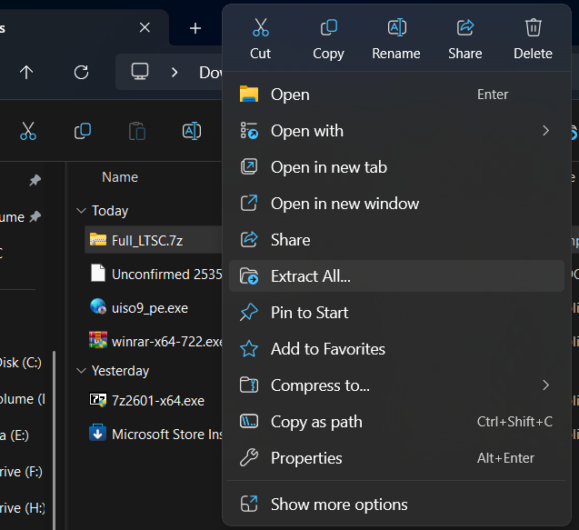
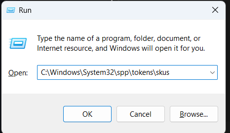
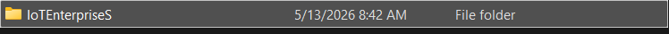
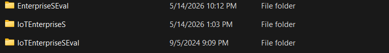
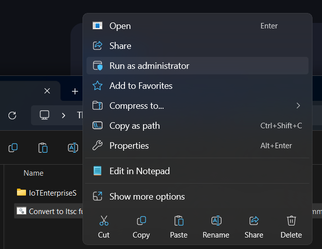

Đầu tiên tải file .7z chứa file .cmd: Tải tại đây
Giải nén file .7z.

Mở hộp thoại Run và sao chép dòng này: "C:\WINDOWS\system32\spp\tokens\skus"

Sao chép "IoTEnterpriseS" vào thanh địa chỉ đó.


Chạy file CMD bằng quyền administrator và hoàn thành.
